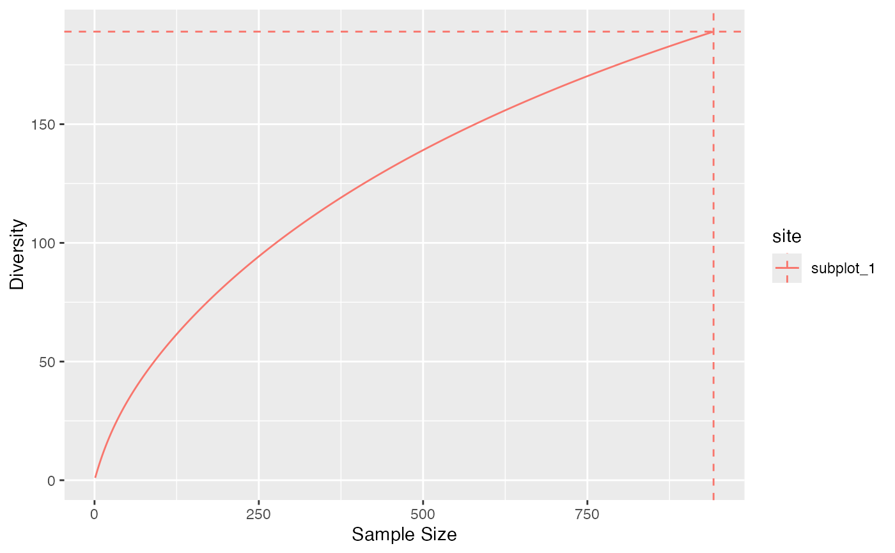

Diversity and Entropy Accumulation Curves represent the accumulation of entropy and diversity with respect to the sample size.
Usage
accum_tsallis(x, ...)
# S3 method for class 'numeric'
accum_tsallis(
x,
q = 0,
levels = seq_len(sum(x)),
probability_estimator = c("Chao2015", "Chao2013", "ChaoShen", "naive"),
unveiling = c("geometric", "uniform", "none"),
richness_estimator = c("rarefy", "jackknife", "iChao1", "Chao1", "naive"),
jack_alpha = 0.05,
jack_max = 10,
coverage_estimator = c("ZhangHuang", "Chao", "Turing", "Good"),
n_simulations = 0,
alpha = 0.05,
show_progress = TRUE,
...,
check_arguments = TRUE
)
# S3 method for class 'abundances'
accum_tsallis(
x,
q = 0,
levels = NULL,
probability_estimator = c("Chao2015", "Chao2013", "ChaoShen", "naive"),
unveiling = c("geometric", "uniform", "none"),
richness_estimator = c("rarefy", "jackknife", "iChao1", "Chao1", "naive"),
jack_alpha = 0.05,
jack_max = 10,
coverage_estimator = c("ZhangHuang", "Chao", "Turing", "Good"),
n_simulations = 0,
alpha = 0.05,
show_progress = TRUE,
...,
check_arguments = TRUE
)
accum_hill(x, ...)
# S3 method for class 'numeric'
accum_hill(
x,
q = 0,
levels = seq_len(sum(x)),
probability_estimator = c("Chao2015", "Chao2013", "ChaoShen", "naive"),
unveiling = c("geometric", "uniform", "none"),
richness_estimator = c("rarefy", "jackknife", "iChao1", "Chao1", "naive"),
jack_alpha = 0.05,
jack_max = 10,
coverage_estimator = c("ZhangHuang", "Chao", "Turing", "Good"),
n_simulations = 0,
alpha = 0.05,
show_progress = TRUE,
...,
check_arguments = TRUE
)
# S3 method for class 'abundances'
accum_hill(
x,
q = 0,
levels = NULL,
probability_estimator = c("Chao2015", "Chao2013", "ChaoShen", "naive"),
unveiling = c("geometric", "uniform", "none"),
richness_estimator = c("rarefy", "jackknife", "iChao1", "Chao1", "naive"),
jack_alpha = 0.05,
jack_max = 10,
coverage_estimator = c("ZhangHuang", "Chao", "Turing", "Good"),
n_simulations = 0,
alpha = 0.05,
show_progress = TRUE,
...,
check_arguments = TRUE
)Arguments
- x
An object, that may be a numeric vector containing abundances or probabilities, or an object of class abundances or probabilities.
- ...
Unused.
- q
a number: the order of diversity.
- levels
The levels, i.e. the sample sizes of interpolation or extrapolation: a vector of integer values.
- probability_estimator
a string containing one of the possible estimators of the probability distribution (see probabilities). Used only for extrapolation.
- unveiling
a string containing one of the possible unveiling methods to estimate the probabilities of the unobserved species (see probabilities). Used only for extrapolation.
- richness_estimator
an estimator of richness to evaluate the total number of species, see div_richness. used for interpolation and extrapolation.
- jack_alpha
the risk level, 5% by default, used to optimize the jackknife order.
- jack_max
the highest jackknife order allowed. Default is 10.
- coverage_estimator
an estimator of sample coverage used by coverage.
- n_simulations
the number of simulations used to estimate the confidence envelope.
- alpha
the risk level, 5% by default.
- show_progress
if TRUE, a progress bar is shown during long computations.
- check_arguments
if
TRUE, the function arguments are verified. Should be set toFALSEto save time when the arguments have been checked elsewhere.
Value
A tibble with the site names, the estimators used and the accumulated entropy or diversity at each level of sampling effort.
Details
accum_hill() or accum_tsallis() estimate the diversity or entropy accumulation
curve of a distribution.
See ent_tsallis for details about the computation of entropy at each level
of interpolation and extrapolation.
In accumulation curves, extrapolation is done by estimating the asymptotic distribution of the community and estimating entropy at different levels by interpolation.
Interpolation and extrapolation of integer orders of diversity are from Chao et al. (2014) . The asymptotic richness is adjusted so that the extrapolated part of the accumulation joins the observed value at the sample size.
"accumulation" objects can be plotted. They generalize the classical Species Accumulation Curves (SAC) which are diversity accumulation of order \(q=0\).
References
Chao A, Gotelli NJ, Hsieh TC, Sander EL, Ma KH, Colwell RK, Ellison AM (2014). “Rarefaction and Extrapolation with Hill Numbers: A Framework for Sampling and Estimation in Species Diversity Studies.” Ecological Monographs, 84(1), 45–67. doi:10.1890/13-0133.1 .
Examples
# Paracou 6 subplot 1
autoplot(accum_hill(paracou_6_abd[1, ]))
